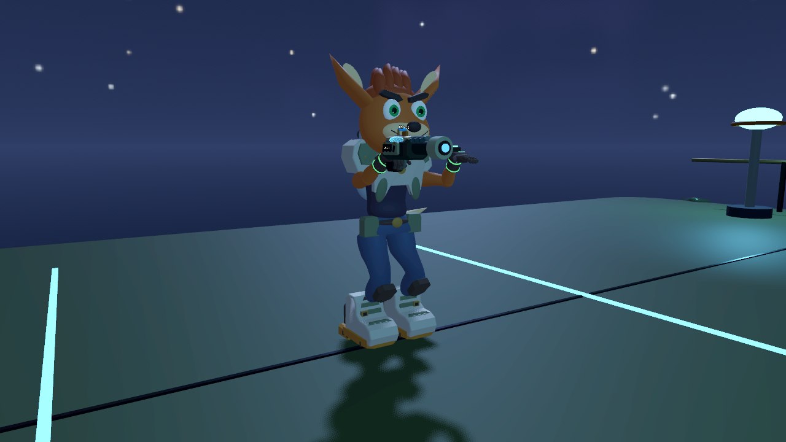
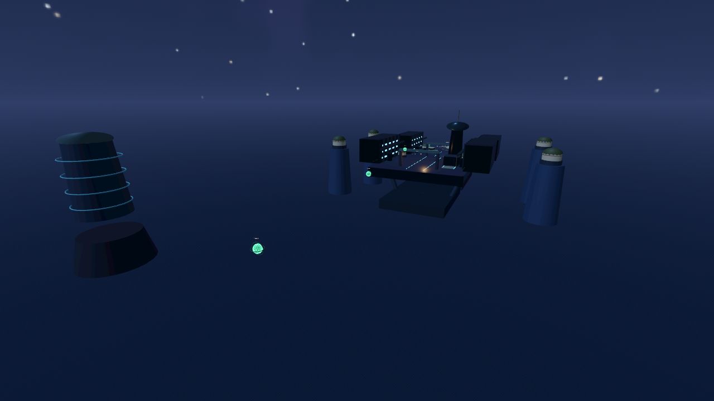
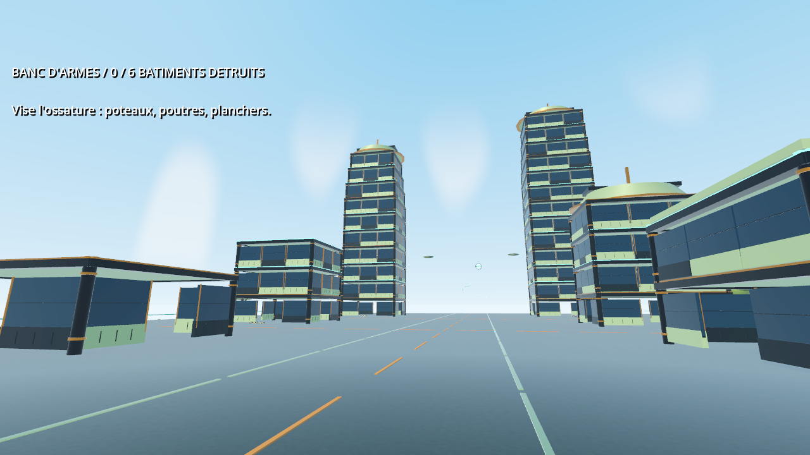
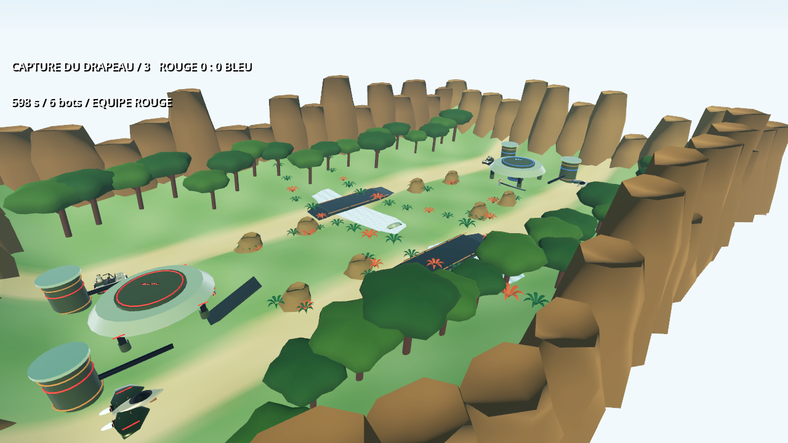

IMMERSION
Meta Quest
Dans la peau de Nebula. Déplacement fluide, mains VR, lancers physiques et coups de crosse.
- Quest 3 et Quest 3S
- APK ARM64 · installation manuelle
- Solo et coop avec les joueurs Android
PROTOTYPE JOUABLE · 0.41.0
Incarnez Nebula, un aventurier aux outils un peu démesurés. Docks suspendus, robots hostiles et sauts dans le vide : la prochaine expédition commence ici.
Choisir ma version
PRÊT POUR LE DÉPART ?
Dans la peau de Nebula. Déplacement fluide, mains VR, lancers physiques et coups de crosse.
La même aventure, sans casque. Commandes tactiles et caméra à la troisième personne, avec vue subjective au choix.
Version de développement : des bugs et des ajustements sont encore à prévoir. Les APK vérifient au lancement si une mise à jour est disponible sur ce dépôt; son installation reste manuelle.
UN MONDE AU-DESSUS DU VIDE

Retrouvez le parcours construit à la main : neuf secteurs, des robots à affronter, des plateformes et des enchaînements au grappin.
Choisissez une expédition courte, standard ou longue. Une graine commune organise les secteurs, les hauteurs, les rencontres et les passages au grappin pour toute l’équipe.
NOUVEAU / BANC D’ARMES
Un quartier de test inspiré de notre Heliopolis : atelier, hangar, centre de transit, relais et deux grandes tours. Ouvre les façades, coupe les appuis et regarde les sections privées de soutien s’effondrer. Le test se termine à six bâtiments détruits, en solo ou en coop.

Choisis « Banc d’armes / démolition » dans le menu. Les façades détaillées se détachent en sections articulées, puis les joints cèdent et les débris rebondissent. Le soutien et les débris gardent un budget de simulation adapté au mobile. Les 72 fps sur Quest restent à mesurer.
NOUVEAU / VALLEE SYLVESTRE
Match par équipes ou capture du drapeau. Jusqu’à quatre joueurs Quest et Android, avec zéro à six bots Nebula. Deux bases, une vallée boisée et futuriste, une rivière et ses ponts, des arbres à larges couronnes, un rover et un appareil volant par équipe.

Choisissez Arène / équipes ou Arène / drapeaux, puis le nombre de bots avant de lancer. Le rover accueille un conducteur et un tireur de tourelle, humains ou bots. X gauche en VR / EMBARQUER sur mobile : entrer ou sortir. Hors véhicule, X / ALLIE appelle un compagnon. En vol : saut pour monter et crosse pour descendre. Version 0.41.0 requise sur tous les appareils.
UN HÔTE. JUSQU’À TROIS AMIS.
Les positions, le corps, les mains et l’arme de chaque Nebula sont partagés, ainsi que le lancer du chargeur du shockwave. Les joueurs mobiles peuvent voir les gestes des joueurs VR; l’hôte conserve l’état des ennemis et les dégâts.
La liste JOUEURS se rafraîchit automatiquement. Invitez une personne présente, ou créez une partie publique visible dans PARTIES.
Acceptez une invitation ou rejoignez une partie publique, même déjà commencée. Jusqu’à quatre joueurs Quest et Android, tous en version 0.41.0.
L’hôte lance la partie quand le groupe est prêt. Pendant le jeu : Y gauche en VR ou bouton pause sur mobile pour inviter, régler musique et bruitages, ou revenir au salon avec le groupe.
BIEN DÉMARRER
Téléchargez l’APK Quest sur un ordinateur. Avec le mode développeur activé sur votre casque, installez-le par SideQuest ou avec adb install -r Nebula-VR-Quest-0.41.0.apk. Lancez ensuite « Nebula VR » dans les sources inconnues. La mise à jour conserve l’identifiant de l’ancien prototype Quest.
Ouvrez l’APK Android sur votre téléphone et autorisez son installation depuis votre navigateur si Android le demande. Lancez « Nebula VR Mobile » en paysage. Le joystick gauche déplace Nebula; glissez au centre droit pour regarder. Les boutons servent à tirer, sauter, frapper, changer d’arme, recharger, aspirer et utiliser le grappin.
À partir de la 0.38, l’appli vérifie les nouvelles versions puis télécharge et contrôle l’APK automatiquement au menu, hors partie et groupe. Android ou Quest peuvent demander d’autoriser Nebula à installer ses mises à jour et de confirmer l’installation. Aucun navigateur n’est nécessaire. Une partie en cours continue normalement. Installez la 0.40 manuellement une dernière fois pour activer ce système.